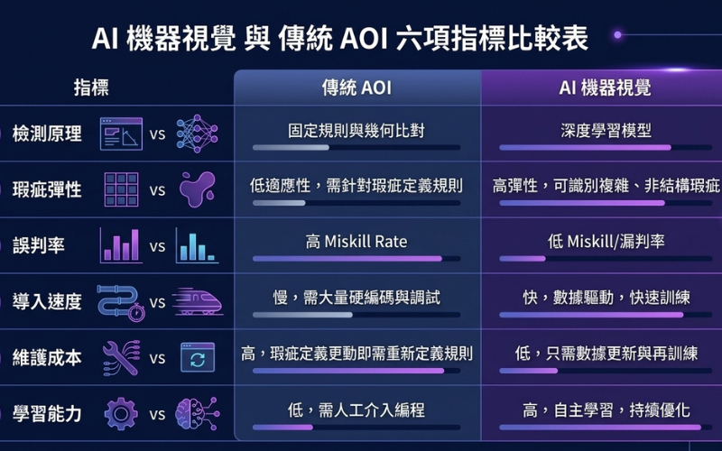

在瑕疵檢測的世界裡，AOI（自動光學檢測）已經是製造業用了多年的成熟工具。近年 AI 機器視覺興起後，很多人開始問：AI 是不是要取代 AOI 了？該換嗎？
答案沒有那麼二元。兩者各有擅長的場景，理解差異才能做對選擇。這篇文章把它們攤開來比。
先搞懂：兩者的根本差異
傳統 AOI 與 AI 機器視覺最核心的差別，在於「怎麼判斷一個東西是好是壞」。
- 傳統 AOI 靠規則：工程師事先設定好判定條件——尺寸範圍、顏色閾值、對比度、位置公差等。系統照著這些規則比對，符合就過、不符合就擋。它像一位遵守明確 SOP 的檢查員。
- AI 機器視覺靠學習：不寫死規則，而是餵大量「好品」與「不良品」的影像，讓模型自己學會分辨。它像一位看過大量案例、憑經驗判斷的資深檢查員。
這個根本差異，決定了它們在各種情境下的表現。
六大面向比較
| 面向 | 傳統 AOI | AI 機器視覺 |
|---|---|---|
| 檢測原理 | 預設規則比對 | 深度學習模型判斷 |
| 瑕疵彈性 | 規則明確者佳，多變者吃力 | 擅長外觀多變、邊界模糊的瑕疵 |
| 誤判率 | 複雜瑕疵易誤判 | 訓練得當後明顯較低 |
| 導入速度 | 規則清楚時快 | 需收集資料與訓練，前期較久 |
| 維護成本 | 新瑕疵需人工重設規則 | 可用新樣本再訓練持續優化 |
| 學習能力 | 不會自己進步 | 越用越準 |

傳統 AOI 的強項
別急著覺得 AI 一定比較好。在對的場景，傳統 AOI 依然非常有競爭力：
- 規則明確的檢測：例如尺寸量測、有無件判斷、明確的位置對位，規則寫得出來，AOI 又快又穩。
- 導入快、成本可控：不需要大量訓練資料，規則設定好就能上線。
- 判定可解釋：為什麼判不良，直接對應到哪條規則超標，追溯清楚。
如果你的瑕疵類型固定、規則明確，傳統 AOI 往往是更務實的選擇。
AI 機器視覺的強項
當問題變複雜，AI 的價值就浮現了：
- 應付多變瑕疵：刮痕、髒污、色差、形狀不規則這類「說不清規則」的瑕疵，正是 AI 的主場。
- 誤判率更低：規則式系統為了不漏檢，常把判定拉得很嚴，導致大量誤殺；AI 訓練得當後能更精準地區分真假瑕疵。
- 會持續進步：遇到新的瑕疵類型，收集樣本再訓練即可，不必重寫一整套規則。
那到底該怎麼選？
與其問「AI 還是 AOI」，更好的問法是「我的產線問題是哪一種」：
- 瑕疵規則明確、追求速度與低成本 → 傳統 AOI 通常足夠。
- 瑕疵多變、現有系統誤判率高、想長期優化 → AI 機器視覺更適合。
- 兩者兼有 → 最務實的做法往往是「搭配使用」。
實務上，越來越多產線採取混合策略：用 AOI 處理規則清楚的量測與判斷，再用 AI 補上那些「規則搞不定」的複雜瑕疵。兩者不是取代關係，而是分工。
炘智科技的建議
選 AI 還是 AOI，不該從技術偏好出發，而該從你的實際製程與瑕疵特性出發。同樣一句「想做瑕疵檢測」，半導體、PCB 與精密組裝的最佳解可能完全不同。
炘智科技的做法，是先了解你的產線現況——目前的漏檢率、誤判率、瑕疵類型與節拍需求，再判斷該用規則式檢測、AI 檢測，還是兩者結合，並負責從開發到與 PLC／MES 整合的完整落地。
如果你正在評估要不要升級現有的 AOI，或不確定 AI 檢測適不適合你的產線，歡迎與我們聯絡，我們可以一起釐清最合適的方向。